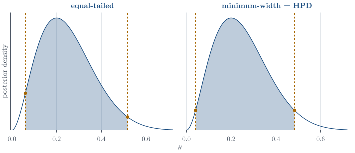

Bayesian foundations
Part of Bayesian statistics · 15 questions on this topic · What links here
Bayesian foundations

| Part | Bayesian statistics |
| Chapter | 1 of 9 in this part |
| Next | The Beta–Binomial model |
| Questions | 15 (6 book, 5 practice, 4 concept) |
| Definitions | Bayesian credible interval · Proper prior and proper posterior · Posterior point summaries · Credible-region constructions · Prior and posterior predictive distributions |
| Results | Bayes’ rule · Posterior summaries from draws · Predictive-variance decomposition |
| Figures | 1 |
What is random?
Statistical inference is not exhausted by a contest between two schools. At least three traditions are worth distinguishing at the outset: classical or frequentist, Bayesian, and fiducial inference. Fiducial statistics takes a different route again to statements about unknown parameters, but it is now a much quieter and more specialised field. It is named here so that a useful comparison between frequentist and Bayesian reasoning is not mistaken for an exhaustive classification; we shall not develop fiducial methods in this book.
In a frequentist model the unknown parameter is fixed, while data are random under repeated sampling. For example, if
X_1,\ldots,X_n\stackrel{\mathrm{iid}}{\sim}\operatorname{N}(\mu,\sigma^2),
then the sample mean and sample variance are random variables,
\overline X=\frac1n\sum_{i=1}^nX_i, \qquad S^2=\frac1{n-1}\sum_{i=1}^n(X_i-\overline X)^2,
but \mu is not. A theoretical 95\% confidence statement is
\mathbb{P}_{\mu}\!\left( \overline X-t_{0.975,n-1}\frac{S}{\sqrt n} <\mu< \overline X+t_{0.975,n-1}\frac{S}{\sqrt n} \right)=0.95.
The randomness in this statement comes from repeating the entire sampling procedure. After observing x_1,\ldots,x_n, the realised interval is fixed; the frequentist statement is about the long-run coverage of the procedure.
A frequentist hypothesis test likewise refers to repeated sampling. Under a null hypothesis H_0, a p-value is the probability of obtaining a test statistic at least as extreme as the observed value:
p_{\mathrm{value}} =\mathbb{P}_{H_0}\{T(X)\text{ is at least as extreme as }T(x)\}.
It is not \mathbb{P}(H_0\mid x). Conventional design values such as type-I error 0.05 and type-II error 0.20 are choices about long-run performance, not probabilities that the realised decision is correct.
Bayesian and frequentist inference are not a contest for a single universal winner. Frequentist procedures often have excellent theory and fast computation; Bayesian statements are often easier to explain because they put probability directly on the uncertain quantity. A statistician should understand both languages well enough to say exactly what a reported interval or probability means. Statistics is usually a helper discipline, and an answer that cannot be communicated accurately to the scientist or decision-maker has not finished its job.
Definition 1 (Bayesian credible interval) Bayesian analysis introduces a probability distribution for the unknown parameter. Conditional on observed data x, a statement such as
\mathbb{P}\!\left(a(x)<\mu<b(x)\mid x\right)=0.95
is meaningful. The interval (a(x),b(x)) is a 95\% credible interval. This is not a reworded confidence interval: the two calculations can coincide in large samples, but their probability statements condition on different objects.
Bayes’ rule for densities
Theorem 1 (Bayes’ rule) For events A and B with \mathbb{P}(B)>0,
\mathbb{P}(A\mid B)=\frac{\mathbb{P}(B\mid A)\mathbb{P}(A)}{\mathbb{P}(B)}.
The density version follows from two factorizations of a joint density:
p(x,\theta)=p(x\mid\theta)p(\theta) =p(\theta\mid x)p(x).
Equating the right-hand sides and dividing by p(x) gives p(\theta\mid x) =\frac{p(x\mid\theta)p(\theta)}{p(x)}. \qquad(1)
Here
p(x\mid\theta) is the sampling density, viewed as a likelihood in \theta after x is observed;
p(\theta) is the prior density;
p(\theta\mid x) is the posterior density; and
p(x) is the marginal likelihood, or evidence.
The evidence is the constant that normalises the posterior. For a continuous parameter, \begin{align*} p(x) &=\int p(x,\theta)\,\mathrm{d}\theta\\ &=\int p(x\mid\theta)p(\theta)\,\mathrm{d}\theta. \end{align*} For a discrete parameter taking values \theta_1,\ldots,\theta_m,
p(x)=\sum_{j=1}^mp(x\mid\theta_j)p(\theta_j).
When only the posterior’s shape is needed, the denominator in Equation 1 does not depend on \theta, so p(\theta\mid x)\propto p(x\mid\theta)p(\theta). \qquad(2)
Bayesian calculation is the controlled multiplication of a likelihood by a prior, followed by normalisation or recognition of a known density kernel. The proportionality symbol removes constants in the variable being analysed, not arbitrary terms that still depend on that variable.
Priors and transparency
Definition 2 (Proper prior and proper posterior) A prior is proper if it is a probability distribution, so its total mass is one. A posterior is proper if the product of likelihood and prior has a finite, nonzero normalising constant. An improper prior may sometimes produce a proper posterior, but this must be checked rather than assumed.
A subjective prior encodes stated beliefs or expert information. An objective or weakly informative prior tries to limit the prior’s influence while still producing a mathematically usable model. Neither label removes judgement. Support, scale, invariance, tail behaviour, and parameterisation all matter. In particular, a prior that is exactly zero on part of the parameter space can never be rescued there by data:
p(\theta\mid x)\propto p(x\mid\theta)p(\theta)=0 \quad\text{whenever }p(\theta)=0.
A diffuse normal prior may be badly centred but still has nonzero tails; a bounded uniform prior that excludes the true value rules it out forever.
A prior does not remove judgement; it makes judgement visible. That is both a strength and a danger. The prior should be chosen before looking at the data being analysed, its scientific basis should be stated, and conclusions that move under other reasonable priors should be reported as sensitive. Prior influence is strongest precisely when the data are weakest, which is when good prior information can help most and an indefensible prior can do most damage. Formal expert elicitation is a standing reminder of the same caution: prior information is a double-edged sword, neither a defect nor an automatic virtue.
The practical discipline is:
state the prior family and every hyperparameter;
explain the scale on which it is intended to be weak or informative;
check whether it is proper, meaning that it integrates to one;
check whether the resulting posterior is proper; and
report sensitivity to other defensible priors when the conclusion depends materially on the choice.
Posterior summaries
Definition 3 (Posterior point summaries) For a scalar parameter, common point summaries include
\mathbb{E}(\theta\mid x)=\int\theta p(\theta\mid x)\,\mathrm{d}\theta, \qquad \widehat\theta_{\mathrm{MAP}} =\operatorname*{arg\,max}_{\theta}p(\theta\mid x),
the posterior median, and posterior quantiles. These summaries need not agree for a skewed distribution.
Definition 4 (Credible-region constructions) Three interval constructions are worth distinguishing. An equal-tailed 95\% credible interval (l,u) satisfies
\mathbb{P}(\theta<l\mid x)=0.025, \qquad \mathbb{P}(\theta>u\mid x)=0.025.
The minimum-width interval solves
\min_{l<u}(u-l) \quad\text{subject to}\quad \int_l^u p(\theta\mid x)\,\mathrm{d}\theta=0.95.
A highest-posterior-density set chooses a level c so that
\mathcal H_c=\{\theta:p(\theta\mid x)\geq c\}, \qquad \int_{\mathcal H_c}p(\theta\mid x)\,\mathrm{d}\theta=0.95.
Every included point then has density at least as large as every excluded point. For a continuous unimodal posterior this gives the minimum-width interval; for a multimodal posterior the highest-density set can be disjoint. For a symmetric unimodal density, the mean, median, and mode coincide and the common interval constructions often agree.
The MAP is a useful point, but a point alone discards the uncertainty that the posterior was introduced to represent. A posterior sample converts most summaries into ordinary sample calculations.
Proposition 1 (Posterior summaries from draws) Let \theta^{(1)},\ldots,\theta^{(L)} be posterior draws and let \theta_{(1)}\leq\cdots\leq\theta_{(L)} be their order statistics. Then \begin{align*} \widehat{\mathbb{E}}(\theta\mid x) &=\frac1L\sum_{l=1}^L\theta^{(l)},\\ \widehat{\operatorname{Var}}(\theta\mid x) &=\frac1{L-1}\sum_{l=1}^L \left(\theta^{(l)}-\overline\theta\right)^2,\\ \widehat{\mathbb{P}}(\theta<c\mid x) &=\frac1L\sum_{l=1}^L\mathbf{1}\{\theta^{(l)}<c\}. \end{align*} The posterior median and equal-tailed interval are estimated by the corresponding empirical quantiles. With L=1000, the median can be estimated by the average of \theta_{(500)} and \theta_{(501)}, and a direct 95\% interval approximation by [\theta_{(25)},\theta_{(975)}]. The precise indices vary slightly with a software package’s quantile convention.
The mode is the exception. It is not an order statistic and, for continuous draws, looking for the most frequently repeated value is generally useless. One should maximise the posterior density or log-posterior, or deliberately construct and optimise a density estimate if the density itself is unavailable.
Remark 1 (R’s distribution interface). For a common distribution, R prefixes the distribution name by d for density, p for cumulative probability, q for quantile, and r for random generation. These are numerical calculations to run once the posterior distribution has been derived. For the \operatorname{Beta}(3,9) posterior in Figure 1, the following commands compute its median, a posterior probability, an equal-tailed interval, and Monte Carlo versions of the same summaries.
# theta | x ~ Beta(3, 9)
qbeta(0.5, shape1 = 3, shape2 = 9) # posterior median
pbeta(0.5, shape1 = 3, shape2 = 9) # P(theta <= 0.5 | x)
qbeta(c(0.025, 0.975), 3, 9) # equal-tailed interval
set.seed(3500)
theta <- rbeta(1000, shape1 = 3, shape2 = 9)
c(mean = mean(theta),
median = median(theta),
Pr_below_half = mean(theta < 0.5))
quantile(theta, c(0.025, 0.975))The first three lines use the known Beta posterior directly and are preferable when the required function is available. The simulated calculation is the version that survives when the posterior is accessible only through a sampler. Increasing the number of draws reduces Monte Carlo error; it does not repair a sampler that targets the wrong distribution.
Prior and posterior prediction
The posterior p(\theta\mid x) describes uncertainty about an unknown parameter. Many scientific questions instead concern an observable outcome: the next patient’s response, tomorrow’s demand, the number of defects in a future batch, or the mean mark in a future class. These are not questions about \theta itself. They require a distribution for a future random quantity \widetilde X.
Prediction moves posterior uncertainty back onto the scale of the data. It serves at least three purposes:
forecasting future observations or future aggregates;
supporting decisions whose consequences depend on what will be observed, rather than on the parameter alone; and
checking whether replicated data generated by the fitted model resemble the observations that motivated the model.
The predictive target must be stated. The distribution of one new observation, a future sample mean, and a future count over m trials are different even when they use the same posterior for \theta.
Prior predictive and posterior predictive distributions
Definition 5 (Prior and posterior predictive distributions) Before data are observed, a new observation \widetilde x is generated by first drawing \theta from its prior and then drawing \widetilde x from the sampling model. Marginalising \theta gives the prior predictive density: \begin{align*} p(\widetilde x) &=\int p(\widetilde x,\theta)\,\mathrm{d}\theta\\ &=\int p(\widetilde x\mid\theta)p(\theta)\,\mathrm{d}\theta. \end{align*}
After observing x, the analogous calculation uses the posterior: \begin{align*} p(\widetilde x\mid x) &=\int p(\widetilde x,\theta\mid x)\,\mathrm{d}\theta\\ &=\int p(\widetilde x\mid\theta,x)p(\theta\mid x)\,\mathrm{d}\theta\\ &=\int p(\widetilde x\mid\theta)p(\theta\mid x)\,\mathrm{d}\theta. \end{align*} The last equality uses conditional independence of future and observed data given \theta. Prediction therefore averages the sampling model over parameter uncertainty instead of plugging in a single estimate.
The prior predictive distribution asks what data the complete model regarded as plausible before seeing the observations. It is therefore useful for study design and for detecting a prior that places most of its mass on scientifically absurd data. The posterior predictive distribution asks what future data are plausible after learning from x. It is used for forecasting and for posterior predictive model checks. Although both are mixtures of the sampling distribution, they mix with different distributions for \theta: p(\theta) before the data and p(\theta\mid x) after the data.
One of the best ways to understand a probabilistic model is to run it in both directions. Fitting asks what parameter values are plausible after seeing the data; generation asks what data those parameter values would produce. Prior and posterior predictive simulation turn an abstract hierarchy of densities into observable consequences, which is why prediction is also a powerful model-checking habit.
Why a plug-in prediction is incomplete
Replacing \theta by one estimate \widehat\theta gives the plug-in distribution p(\widetilde x\mid\widehat\theta). This treats \widehat\theta as known and therefore omits parameter uncertainty. The omitted contribution is visible from the laws of total expectation and total variance. Define
m(\theta)=\mathbb{E}(\widetilde X\mid\theta), \qquad v(\theta)=\operatorname{Var}(\widetilde X\mid\theta).
Conditional independence gives \begin{align*} \mathbb{E}(\widetilde X\mid x) &=\mathbb{E}\!\left\{\mathbb{E}(\widetilde X\mid\theta,x)\mid x\right\}\\ &=\mathbb{E}\!\left\{\mathbb{E}(\widetilde X\mid\theta)\mid x\right\}\\ &=\mathbb{E}\{m(\theta)\mid x\}. \end{align*} To derive the variance decomposition, let M=\mathbb{E}(\widetilde X\mid x). Then
\widetilde X-M =\{\widetilde X-m(\theta)\}+\{m(\theta)-M\}.
Squaring and taking the posterior-predictive expectation gives \begin{align*} \operatorname{Var}(\widetilde X\mid x) &=\mathbb{E}\!\left[\{\widetilde X-m(\theta)\}^2\mid x\right] +\mathbb{E}\!\left[\{m(\theta)-M\}^2\mid x\right]\\ &\quad +2\mathbb{E}\!\left[ \{\widetilde X-m(\theta)\}\{m(\theta)-M\}\mid x \right]. \end{align*} The cross-term is zero because \begin{align*} &\mathbb{E}\!\left[ \{\widetilde X-m(\theta)\}\{m(\theta)-M\}\mid x \right]\\ &\quad= \mathbb{E}\!\left[ \mathbb{E}\{\widetilde X-m(\theta)\mid\theta,x\} \{m(\theta)-M\}\mid x \right]\\ &\quad=0. \end{align*}
Proposition 2 (Predictive-variance decomposition) Under the conditional-independence assumption above, \boxed{ \operatorname{Var}(\widetilde X\mid x) =\underbrace{\mathbb{E}\{v(\theta)\mid x\}}_{\textnormal{future-observation noise}} +\underbrace{\operatorname{Var}\{m(\theta)\mid x\}}_{\textnormal{parameter uncertainty}}.} \qquad(3)
A plug-in distribution keeps only the first kind of variation evaluated at \widehat\theta. Its intervals are therefore commonly too narrow. A credible interval for \theta and a predictive interval for \widetilde X answer different questions; the latter is usually wider because it must include the randomness of a new observation as well.
Prediction by simulation
A finite mixture provides a useful way to remember the simulation. To sample from a mixture, first select a component and then sample within that component. For a predictive distribution the parameter draw plays the role of the component: first select one plausible data-generating model, then generate an observation from it. The integral gives the same two-stage recipe:
before data, draw \theta^{(l)}\sim p(\theta); after data, draw \theta^{(l)}\sim p(\theta\mid x);
draw \widetilde x^{(l)}\sim p(\widetilde x\mid\theta^{(l)});
summarise the \widetilde x^{(l)} values.
The simulated future observations are not fed back into the posterior because they are not observed data. This algorithm remains valid when the predictive integral has no closed form and when \widetilde X is multivariate.
The posterior predictive distribution is the Bayesian answer to what might we observe next? It averages over every plausible parameter value instead of behaving as though one estimate were exact. Its uncertainty contains both irreducible future-observation noise and uncertainty about the data-generating parameter.
Questions on this topic
Open a question to attempt it. Its worked answer is folded away at the bottom of the page.
| Question | Source | Answer |
|---|---|---|
| Confidence procedures | Book exercise | – |
| What makes a hypothesis test? | Book exercise | – |
| One thousand posterior draws | Book exercise | – |
| Prediction is not estimation | Book exercise | – |
| The missing variance | Book exercise | – |
| Posterior mean under squared-error loss | Book, applied | ✓ |
| Q3. Confidence and credible intervals | Practice set | ✓ |
| Q8. Equal-tailed and highest-density intervals | Practice set | ✓ |
| Q13. Bayesian German tank problem | Practice set | ✓ |
| Q15. Prior beliefs and conflicting data | Practice set | ✓ |
| Q16. Interpreting identical interval endpoints | Practice set | ✓ |
| C1. Likelihood, prior and posterior | Concept check | ✓ |
| C5. Posterior prediction | Concept check | ✓ |
| C6. Two kinds of interval | Concept check | ✓ |
| C7. MAP and squared-error loss | Concept check | ✓ |
What links here
Pages (9)
- The Beta–Binomial model — via posterior mode, posterior predictive distribution, Equation (3) in Bayesian foundations
- Conjugate analysis for normal models — via posterior mode
- Markov chains, Gibbs sampling, and Metropolis–Hastings — via equal-tailed intervals
- Categorical data and the Dirichlet distribution — via posterior mode
- Bayesian hypotheses and model comparison — via credible interval, Bayes’ rule
- Exponential families and conjugacy — via improper priors
- Hierarchical Bayes — via Bayes’ rule, improper prior
- Bayesian linear regression — via Bayes’ rule, posterior mode, credible interval, posterior predictive distribution
- Reference formulas and problem-solving workflow — via credible interval, highest-density intervals, MAP estimate, Bayes’ rule
Questions and answers (33)
- Book exercises: The missing variance · A geometric observation and a uniform prior · Metropolis–Hastings for the logit-normal posterior · Restaurant ordering methods · An IQ threshold · Sufficiency and the posterior · Mean response or new response?
- Practice set: Q2 (answer) · Q3 · Q7 · Q8 · Q12 · Q13 · Q15 (answer) · Q16 · Q20 · Q22 · Q24 · Q25 (answer) · Q28 · Q42 (answer) · Q43 (answer)
- Final preparation: Question 1 · Question 3 (answer) · Question 5 · Question 7 · Question 8 (answer) · Question 12 · Question 14 · Question 18
- Concept checks: C6 · C7 · C11
See also
- Articles from this chapter: Bayesian credible interval · Bayes’ rule · Proper prior and proper posterior · Posterior point summaries · Credible-region constructions · Posterior summaries from draws · R’s distribution interface · Prior and posterior predictive distributions · Predictive-variance decomposition
- All bayesian statistics chapters
- Glossary and index
- Distribution sheet and formula lookup